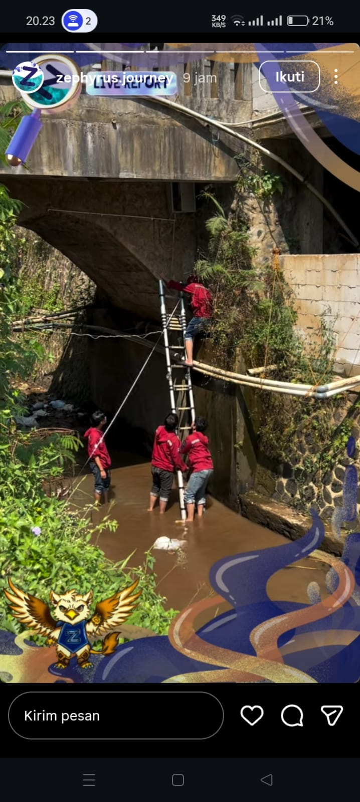
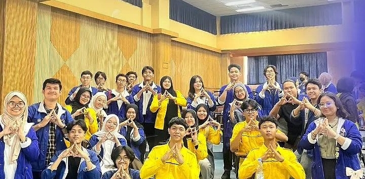
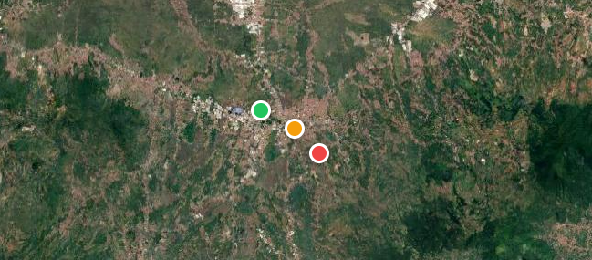

Temukan Informasi Menarik Seputar Badan Otonom Zephyrus

Penentuan Titik Pemasangan sensor FEWS.

Terlalu banyak insight yg didapat

mangeak
@zephyrus.journey
@590efkcc
hmmezephyrus@gmail.com
Labtek XI Kampus Ganesha Institut Teknologi Bandung, Jalan Ganesa No. 10